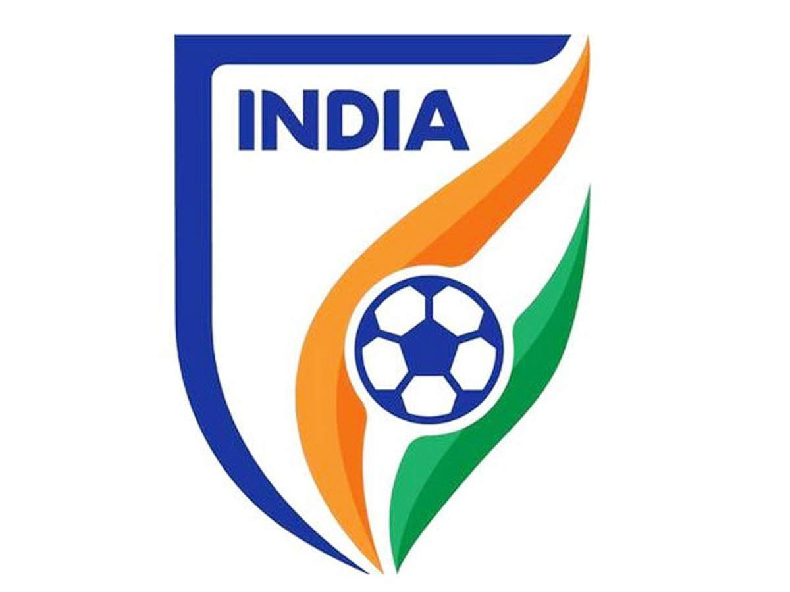
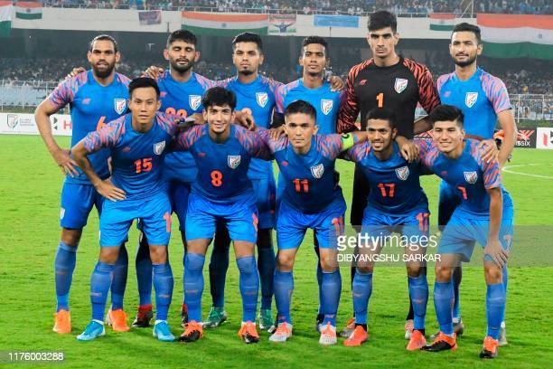

|  |
Equipments needed for cricket are- Bat,Ball,Helmet,Pads and Gloves. |
 |
Football is a family of team sports that involve, to varying degrees, kicking a ball to score a goal. Unqualified, the word football normally means the form of football that is the most popular where the word is used. Sports commonly called football include association football (known as soccer in North America and Oceania); gridiron football (specifically American football or Canadian football); Australian rules football; rugby union and rugby league; and Gaelic football.[1] These various forms of football share to varying extent common origins and are known as football codes.
There are a number of references to traditional, ancient, or prehistoric ball games played in many different parts of the world.[2][3][4] Contemporary codes of football can be traced back to the codification of these games at English public schools during the 19th century.[5][6] The expansion and cultural influence of the British Empire allowed these rules of football to spread to areas of British influence outside the directly controlled Empire.[7] By the end of the 19th century, distinct regional codes were already developing: Gaelic football, for example, deliberately incorporated the rules of local traditional football games in order to maintain their heritage.[8] In 1888, The Football League was founded in England, becoming the first of many professional football associations. During the 20th century, several of the various kinds of football grew to become some of the most popular team sports in the world.[9]
The history of football in India is a long and detailed one, as it was the national sport at one time. The impetus for this was to unify the Indian Army. There is evidence for refereed between a team of football games being played in the Indian Army since at least 1949. India is home to some of the oldest football clubs in the world,[1] and the world's third oldest competition, the Durand Cup. There was a time when football in India was highly celebrated.[2] The Indian football outfit was called the "Brazilians of Asia".[3]
Football was introduced to India by British soldiers in the mid-nineteenth century. It spread because of the efforts of Nagendra Prasad Sarbadhikari. In 1888 the Durand Cup was founded by then India's Foreign Secretary, Mortimer Durand at Shimla, India. The Durand Cup is the third oldest football competition behind the FA Cup and the Scottish Cup.[citation needed] It was initiated, as a recreation for British troops stationed in India. Royal Scots Fusiliers won the first edition of the cup by beating Highland Light Infantry 2–1 in the Final. In 1893 the IFA Shield was founded as the fourth oldest trophy in the world.[citation needed] Calcutta, then capital of British India, soon became the hub of Indian football. Sarada FC was the oldest Indian football club.
Calcutta FC was the first club to be established in 1872.[4] Other early clubs include Dalhousie Club, Traders Club and Naval Volunteers Club.[5]
In 1889 India's oldest current team Mohun Bagan A.C. was founded as "Mohun Bagan Sporting Club". This was the first club to be under the rule of the army. Both Hindus and Muslims players played in it. Several football clubs like Calcutta FC, Sovabazar and Aryan Club were established in Calcutta during the 1890s. Tournaments like the Gladstone Cup, Trades Cup and Cooch Behar Cup also started around this time.
R B Ferguson Football Club was established on February 20, 1899 in Thrissur, Kerala and it was the oldest football club in the southern part of India. The club was named after the Kochi Police Superintendent, R B Ferguson. The club was famed by the nickname Young Men's Football Club and played a huge role in promoting football in Kerala during the early 1900s.
The first Indian Federation, the Indian Football Association, was founded in 1893 but did not have a single Indian on its board other than.